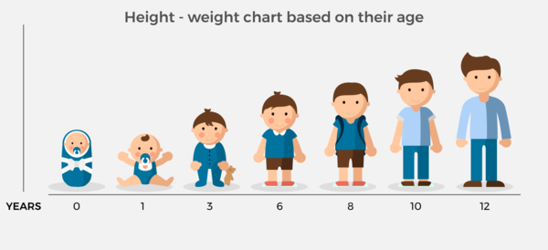

7 Aplicación con nlme
En este capítulo se mostrará como usar el paquete nlme para la aplicación de modelos mixtos con la base de datos Oxboys del mismo paquete.

A continuación la base de datos a utilizar.
library(nlme)
head(Oxboys)## Grouped Data: height ~ age | Subject
## Subject age height Occasion
## 1 1 -1.0000 140.5 1
## 2 1 -0.7479 143.4 2
## 3 1 -0.4630 144.8 3
## 4 1 -0.1643 147.1 4
## 5 1 -0.0027 147.7 5
## 6 1 0.2466 150.2 6Esta base de datos sobre crecimiento contiene la información sobre altura (heigth), edad estandarizada (age) de un grupo de 26 jóvenes. Como la base de datos Oxboys es de la clase groupedData, es posible aplicar un plot directamente y el resultado se muestra continuación.
plot(Oxboys)
groupedData del paquete nlme para más detalles.
De la figura anterior vemos que las curvas de crecimiento inician a diferente altura (intercepto) y que la pendiente del crecimiento no son todas iguales, por ejemplo, el individuo 21 creció más rápido que el individuo 3. Esto nos hace pensar que un modelo con intercepto y pendiente aleatoria podrían ser adecuados para modelar el crecimiento.
En las siguientes ecuaciones se resume el modelo matemático que interesa en esta situación.
\[\begin{align*} Height_{ij} &\sim N(\mu_{ij}, \sigma^2_{Heigth}) \\ \mu_{ij} &= \beta_0 + \beta_1 Age_{ij} + b_{0i} + b_{1i} Age_{ij} \\ \left ( \begin{matrix} b_{0} \\ b_{1} \end{matrix} \right ) &\sim N\left ( \left ( \begin{matrix} 0 \\ 0 \end{matrix} \right ), \left ( \begin{matrix} \sigma^2_{b0} & \sigma_{b01} \\ \sigma_{b01} & \sigma^2_{b1} \end{matrix} \right ) \right ) \end{align*}\]
El vector de parámetros para este modelo sería \(\boldsymbol{\Theta}=(\beta_0, \beta_1, \sigma_{height}, \sigma_{b0}, \sigma_{b1}, \sigma_{b0b1})^\top\).
Para ajustar este modelo a los datos con el paquete nlme podemos usar el siguiente código.
fit <- lme(height ~ age, random= ~ 1 + age | Subject, data=Oxboys, method="REML")Para obtener la tabla de resumen usamos:
summary(fit)## Linear mixed-effects model fit by REML
## Data: Oxboys
## AIC BIC logLik
## 736.091 756.7714 -362.0455
##
## Random effects:
## Formula: ~1 + age | Subject
## Structure: General positive-definite, Log-Cholesky parametrization
## StdDev Corr
## (Intercept) 8.081077 (Intr)
## age 1.680717 0.641
## Residual 0.659889
##
## Fixed effects: height ~ age
## Value Std.Error DF t-value p-value
## (Intercept) 149.37175 1.5854173 207 94.21605 0
## age 6.52547 0.3363003 207 19.40370 0
## Correlation:
## (Intr)
## age 0.628
##
## Standardized Within-Group Residuals:
## Min Q1 Med Q3 Max
## -2.65092109 -0.57493341 -0.02842894 0.59604254 2.60496077
##
## Number of Observations: 234
## Number of Groups: 26De la salida anterior se obtiene que \(\hat{\boldsymbol{\Theta}}=(\hat{\beta}_0=149.37, \hat{\beta}_1=6.53, \hat{\sigma}_{height}=0.66, \hat{\sigma}_{b0}=8.08, \hat{\sigma}_{b1}=1.68, \hat{\sigma}_{b0b1}=8.71)^\top\). La estimación \(\hat{\sigma}_{b0b1}\) no aparece directamente en el summary pero se obtiene utilizando la ecuación \(Cor=Cov/(\sigma_1 \sigma_2)\) que relaciona correlación, covarianza y desviaciones de los efectos aleatorios.
Usando la información anterior se puede escribir el modelo ajustado de la siguiente manera.
\[\begin{align*} Height_{ij} &\sim N(\hat{\mu}_{ij}, 0.66^2) \\ \hat{\mu}_{ij} &= 149.37 + 6.53 Age_{ij} + b_{0i} + b_{1i} Age_{ij} \\ \left ( \begin{matrix} b_{0} \\ b_{1} \end{matrix} \right ) &\sim N\left ( \left ( \begin{matrix} 0 \\ 0 \end{matrix} \right ), \left ( \begin{matrix} 8.08^2 & 8.71 \\ 8.71 & 1.68^2 \end{matrix} \right ) \right ). \end{align*}\]
Los elementos \(b_{0i}\) y \(b_{1i}\) se deben substituir por sus respectivas predicciones \(\tilde{b}_{0i}\) y \(\tilde{b}_{1i}\) y se pueden obtener del modelo ajustado así:
ranef(fit)## (Intercept) age
## 10 -19.0972476 -2.78657472
## 26 -11.3675996 -0.97474075
## 25 -10.1595528 -2.42702035
## 9 -11.2213331 -0.58069044
## 2 -6.5096277 -1.07136271
## 6 -2.5902388 -2.41771656
## 7 -3.2473132 -1.46379286
## 17 -6.3744842 1.89443713
## 16 -1.8344703 -1.86707015
## 15 -5.0856366 0.51526141
## 8 -1.0776201 -0.06615528
## 20 2.0850836 -1.99239802
## 1 -1.2464285 0.59919226
## 18 1.8031920 -0.51486646
## 5 2.0531168 -0.24308081
## 23 1.6937341 0.63140824
## 11 0.6839704 1.85733185
## 21 1.1525543 0.91894343
## 3 6.2613001 -1.58181075
## 24 3.7645669 0.25652772
## 22 5.1957592 1.50551719
## 12 7.4308033 0.52297645
## 13 6.7004368 1.89758007
## 14 10.0986013 2.09367207
## 19 15.1957040 2.50720025
## 4 15.6927297 2.78723179Los valores de los efectos fijos estimados se pueden obtener así:
fixef(fit)## (Intercept) age
## 149.371753 6.525469Usando la información de los efectos fijo y aleatorios obtenidos antes, es posible escribir la ecuación del modelo para cada individuo. Los efectos fijos estimados fueron \(\hat{\beta}_0 \approx 149.37\) y \(\hat{\beta}_1\approx 6.53\). Para el sujeto # 10 se obtuvo \(\tilde{b}_{0, i=10} \approx -19.10\) y \(\tilde{b}_{1, i=10} \approx -2.79\), así la media del individuo # 10 se calcula así:
\[\begin{align*} \hat{\mu}_{i=10, j} &= \hat{\beta}_0 + \hat{\beta}_0 \, Age_{i=10, j} + \tilde{b}_{0, i=10} + \tilde{b}_{1, i=10} \, Age_{i=10, j} \\ \hat{\mu}_{i=10, j} &= 149.37 + 6.53 \, Age_{i=10, j} - 19.10 - 2.79 \, Age_{i=10, j} \\ \hat{\mu}_{i=10, j} &= 130.27 + 3.74 \, Age_{i=10, j} \end{align*}\]
Lo anterior se puede resumir en el siguiente modelo.
\[\begin{align*} Height_{i=10, j} &\sim N(\hat{\mu}_{i=10, j}, \hat{\sigma}^2_{Height}) \\ \hat{\mu}_{i=10, j} &= 130.27 + 3.74 \, Age_{i=10, j} \\ \hat{\sigma}_{Height} &= 0.66 \end{align*}\]
La expresión anterior para cada individuo con los efectos finales (fijos y aleatorios) se puede obtener con R así:
coef(fit)## (Intercept) age
## 10 130.2745 3.738894
## 26 138.0042 5.550728
## 25 139.2122 4.098448
## 9 138.1504 5.944778
## 2 142.8621 5.454106
## 6 146.7815 4.107752
## 7 146.1244 5.061676
## 17 142.9973 8.419906
## 16 147.5373 4.658399
## 15 144.2861 7.040730
## 8 148.2941 6.459313
## 20 151.4568 4.533071
## 1 148.1253 7.124661
## 18 151.1749 6.010602
## 5 151.4249 6.282388
## 23 151.0655 7.156877
## 11 150.0557 8.382801
## 21 150.5243 7.444412
## 3 155.6331 4.943658
## 24 153.1363 6.781996
## 22 154.5675 8.030986
## 12 156.8026 7.048445
## 13 156.0722 8.423049
## 14 159.4704 8.619141
## 19 164.5675 9.032669
## 4 165.0645 9.312700En la presente aplicación es posible incluir la recta de regresión para cada individuo al diagrama de dispersión original. El código de R para obtener esto es el siguiente.
library(lattice)
xyplot(height ~ age | Subject, data=Oxboys, fit=fit,
strip=strip.custom(bg="white"),
pch=16, cex=0.7, col='indianred1',
panel = function(x, y, ..., fit, subscripts) {
panel.xyplot(x, y, ...)
ypred <- fitted(fit)[subscripts]
panel.lines(x, ypred, col="deepskyblue3", lwd=1)
},
ylab="Height (cm)", xlab="Centered age")
En la figura anterior se tienen las observaciones (crecimiento) representado por los puntos rojos, adicionalmente, aparece una recta de color azul que representa la recta de regresión para cada individuo. De la figura se observa que la linea logra explicar la evolución del crecimiento para cada individuo.
Ejercicios
Repita el ejercicio anterior considerando un modelo sólo con intercepto aleatorio. Dibuje las rectas de regresión para cada individuo. ¿Qué opina de este modelo?
Repita el ejercicio anterior considerando un modelo sólo con pendiente aleatoria. Dibuje las rectas de regresión para cada individuo. ¿Qué opina de este modelo?
Estime la estatura para el individuo # 3 cuando su edad centrada sea de 1.1.
Replique los ejemplo de este documento.